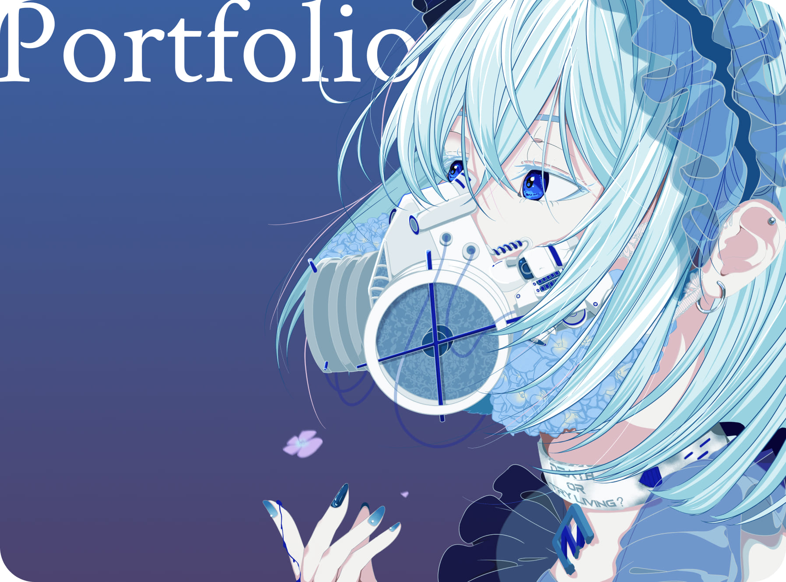
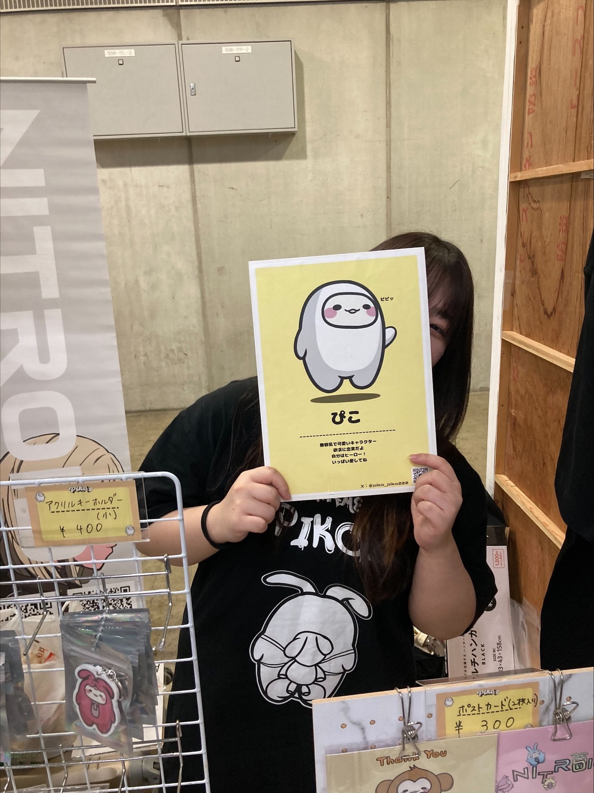

考えて、
寄り添って、
喜びを届けたい。
Art Works
様々なテイストのイラストを描いてきました
Other Works
現職の制作実績の一部です

Rinka Kobayashi
いつも何かをつくっている私について
教育学部を卒業して、未経験からWebデザイナーになりました。最初はパソコンの使い方もほとんど分からなかったのですが、まずは手を動かして、分からないことは分かるまで調べてきました。今ではWebデザインを中心に、イラスト、コーディング、サイト運用など、さまざまな制作に携わっています。
現職で大切にしてきたのは、依頼されたものをそのまま形にするのではなく、相手が本当に伝えたいことを理解してからつくることです。要望を聞き、目的や見せ方を整理し、フィードバックを受けながら完成に近づけていく。周囲と相談しながら、最後まで責任を持って制作を進められることが、私の強みです。
いろいろな制作を経験するなかで、もっとイラストの仕事に関わりたいと思うようになりました。言葉だけでは伝えにくい雰囲気や感情も、色や線、表情によって直感的に届けられる。そんなイラストの力に、あらためて魅力を感じています。
これまでWebデザインで培ってきた、情報を整理する力や、相手の思いを汲み取る力も、イラストの仕事に活かせると考えています。まだまだ描けるようになりたいものも、試してみたい表現もたくさんあります。新しいことを学び続けながら、相手の希望に寄り添い、見る人の記憶に残るものを届けられるつくり手を目指しています。
SKILLS & TOOLS
Illust / Design
- CLIP STUDIO PAINT★★★★★
- Figma★★★★★
- Illustrator★★★★★
- Photoshop★★★★★
- XD★★★★★
WEB
- HTML★★★★★
- CSS★★★★★
- Concrete CMS★★★★★
- Visual Studio Code★★★★★
- SourceTree★★★★★
- GIT★★★★★
- ChatGPT & Codex★★★★★